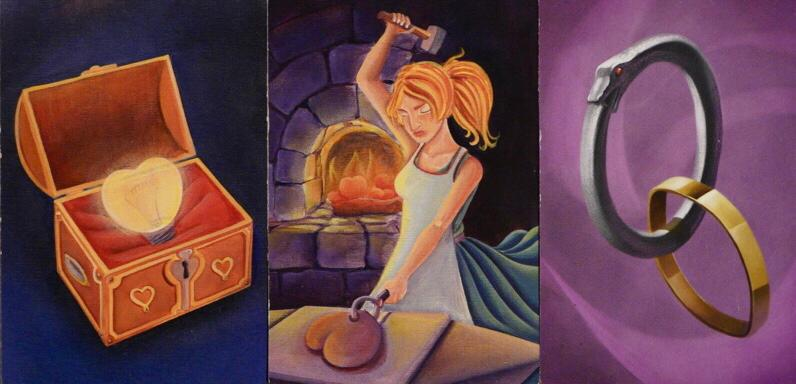
22
Oct

Oct
Iun
Dacă e un lucru pe care îl urăsc mai mult decât orice, acela sunt întrebările de genul „povestește unul dintre cele mai frumoase momente din viața ta sau o experiență care crezi că ți-a schimbat viața!”.
Iun
Cred că ați observat și voi că de mai bine de o săptămână tiktok-ul, discovery feed-ul de pe Instagram și recomandările de pe YouTube sunt inundate de Måneskin. Bănuiesc că majoritatea știți cine sunt aceștia, dar pentru necunoscători, Måneskin este o trupă rock din Italia care a câștigat Eurovision 2021.
Mai
Interviu cu Alexandra Dedu, Chief of Media al conferinței Bucharest Model Nato

Mai
Cred că toți avem săptămânile alea în care parcă toate deadline-urile ne “bântuie” și trebuie să lucrăm mai mult decât putem. Probabil că fiecare dintre noi a simțim nodul ăla în gât când știe că nu are gata niciun proiect, eseu sau orice altceva și trebuie terminate toate in aceeași zi.

Mai
Acum câteva veri când tocmai intrasem în liceu, un tip pe care abia îl cunoscusem m-a întrebat, în ritualul specific conversațiilor formale (logic) în ce liceu sunt. Atât i-a trebuit să afle că am intrat în Sava: s-a schimbat imediat la față, cică nu aveam eu moacă de Sava. Recomandarea lui era să mă mut cât mai rapid din fundătura aia la un conac cu ferestre la bulevard: Lazăr.

Mai
Pe vremea când în loc să dai scroll interminabil pe meniul Netflix butonai telecomanda, cu toții am dat cel puțin o dată peste un serial polițist/de mister. Primul serial pe care l-am văzut vreodată a fost un serial polițist, uitându-mă la seriale polițiste am învățat germană, mi-am făcut mai toate temele din clasele primare cu investigații și crime pe fundal...

Mai
Trebuie să recunosc că eu cel puțin până acum nu i-am prea văzut prin trafic. Cu toate astea, își pot asuma legal consecințele propriilor acțiuni. Școala este aceeași pentru toți, niciunul nu este scutit de a trebui să învețe legislația. Mașinile lor pot circula cu 50 de kilometri pe oră, aproape limita din oraș.
Mai
Mă strigă străzile. Țipă asfaltul când pășesc. Urlă piersicii după mine, urlă a strigoi și a fantome deșarte, dezbrăcate de adevăr.

Mai
Ți s-a întâmplat vreodată să îi spui chelnerului „Mulțumesc, la fel” când îți ura poftă bună? Așa, și? În 5 minute se uită, crede-mă. Genul acesta de situații se petrec mereu.

Mai
Când auziți ”Zack Snyder's Justice League”, cel mai recent film apărut de la DC Extended Universe, există șansa să stați puțin pe gânduri și să vă întrebați ”Cum adică recent? Filmul ăsta nu a apărut acum câțiva ani?”. Răspunsul este simplu: ba da… și totuși… nu chiar.
Mai
Un mic disclaimer, pentru cei care preferă compania ceaiului, a băuturilor decaf sau a altor lichide – acest articol nu își propune să încurajeze în niciun fel consumul excesiv de cafea, ci doar să aducă un mic omagiu acestei mici plăceri a vieții și culturii care s-a format în jurul său.

Apr
Fantasy has become one of the most prominent genres in modern literature, and it isn’t hard to see why. C.S. Lewis (The Chronicles of Narnia), J.R.R. Tolkien (Lord of the Rings), J.K. Rowling (Harry Potter)...
Apr
It used to be true - that our survival instinct is our single greatest source of inspiration. And we must apologize to both Charles Darwin and capitalism, because what they fought to explain and very much rightfully so - free competition -, is no longer the standing pillar of the struggle of human existence.

Apr
Știm ce este TikTok-ul, îl folosim sau l-am folosit măcar o dată în trecut. Ne face plăcere? Nu știm. L-am instalat pentru că asta făcea toată lumea? Poate.

Apr

Apr
suntem profesioniști ne dăm cuvântul de onoare

Apr
Acum ceva timp am dat peste un podcast pe Spotify și am fost plăcut surprinsă să aflu că acesta a fost realizat de un prieten destul de bun de-al meu, Rareș Antal. Podcast-ul se numește ,,Ceilalți”, are doar opt episoade ușor de urmărit, fiecare de maxim 30 de minute și abordează subiecte legate de politică, de probleme sociale sau de viață la modul general.

Apr
În ultimele câteva săptămâni, rețelele de socializare au fost bombardate de celebrul interviu susținut de ducele și de ducesa de Sussex în prezența renumitei Oprah. Mai mult, acesta e disponibil doar pe CBS, program televizat din Statele Unite, ceea ce a stârnit și mai mult curiozitatea față de subiect.

Apr
Îți sună cunoscut? Poți fi sigur/ă că printre acestea se află, cel puțin, un album al Lanei Del Rey. Dacă în continuare îți sună familiar, atunci probabil ai auzit și de noul ei album, Chemtrails over the Country Club, lansat pe data de 19 martie 2021, de Interscope Records și Polydor Records.

Mar
Cu siguranță ați avut de-a face sau ați stat de vorbă măcar o dată cu o persoană care nu se regăsește în domeniul în care lucrează. Sunt sute de mii de Săndei care lucrează prin avocatură, la fel cum sunt și sute de mii de Exacustodieni (da, există numele) care să lucreze în construcții.

Mar
Dragi fani Marvel, vă era cumva dor să ieșiti din sala de cinema absolut traumatizați după vizionarea unui film marca MCU? Grijuliu ca întotdeauna, Kevin Feige a reușit să găsească o metodă excelentă pentru a vă traumatiza în propriile case. Astfel, WandaVision este primul serial semnat de Marvel Studios și, totodată, dă startul fazei 4.
Mar
De câte ori nu v-ați pus întrebarea „Oare cum ar fi arătat viața mea dacă aș fi studiat în America? Cum ar arăta viitorul meu dacă aș aplica acum la facultate acolo?”.

Mar
Cred că orice cititor înrăit cunoaște acel sentiment când termină o carte pe care a adorat-o și nu poate trece peste dezamăgirea produsă de citirea ultimului cuvânt de pe ultima pagină. Trec zile, săptămâni, luni și chiar ani, și tot ce își dorește este să dea timpul înapoi și să o citească din nou pentru prima oară.

Mar
Insecuritățile au reprezentat, reprezintă și vor reprezenta mereu un subiect tabu, atât între copii și adolescenți, cât mai ales între adulți.
Mar
În ultimii ani, am fost martori la popularizarea francizelor de pe Wattpad și în mainstream și oricât de ciudat ar fi să urmărești fanfiction despre One Direction prinzând viață pe marele ecran, cu toții cunoaștem cel puțin o persoană care crede sincer că aceste serii de cărți își merită tot succesul.
Mar
Am început să scriu articolul ăsta cu o amintire tipică, „ce prost eram în a 5-a”, care mi-a readus în atenție câteva mituri despre psihoterapie. Pe scurt, prin clasa a șasea, o fată din grupul nostru a aflat de o colegă că merge la psiholog.

Mar
Imaginează-ți o lume în care vezi litere și numere ca fiind colorate, chiar dacă pe foaie ele sunt tipărite în font negru, sau în care sunete, nici măcar melodii, îți provoacă imagini vizuale, sau în care după ce pronunți numele oamenilor simți diverse arome în gură. Pentru tine, ce gust au secundele? Ce culoare au materiile ca să îți alegi caietele în funcție de asta? Nu, parcă ceva nu e în regulă. Grr! Cuvântul “închisoare” are gust de prosciutto și numele prietenei tale cele mai bune îți amintește de mirosul benzinei când deschizi ușa de la mașină. Complicat, nu-i așa?
Mar
Flori de noapte și de martie urlând triluri de apus
Soare de artie
Mantie de rtie.

Feb
Câteodată nici eu nu știu de ce, uneori, mă simt așa – atât de tristă, atât de neimportantă... Parcă sunt prinsă, pur și simplu, într-un amalgam de sentimente rele care nu mă lasă să mă bucur de momentele ,,fericite” alături de cei din jurul meu.

Feb
Majoritatea oamenilor care o să citească acest articol s-au născut într-un regim politic democratic și probabil s-au bucurat până acum de toate beneficiile pe care le aduce în viețile noastre.

Feb
AMC ai două zile până la deadline, nu ai făcut nimic, pui mâna pe laptop într-un moment de exaltată motivație și sfârșești vizitând conturi de FB ale unor no-name.

Feb
Când vine vorba de Ziua Îndrăgostiților, chiar dacă suntem într-o relație sau nu, ne putem pune de acord cu privire la un aspect: această zi din an nu poate, sub nicio formă, trece neobservată. Fie că ești bombardat de postări ale cuplurilor care sărbătoresc, fie că treci pe lângă vitrinele magazinelor pline de căpșune în ciocolată, ziua de 14 Februarie mai mult ca sigur ți-a atras atenția într-un mod pozitiv sau negativ.

Feb
MIȘA: Poate că nu e o analogie perfectă... Nu știu, nu mă pricep la proverbe, principiile mi le-am reținut ca atare de-a lungul vieții.

Feb
După haosul din 2021, cu siguranță, toți sperăm că 2021 va fi mai blând cu noi. Chiar dacă șansele de a te uita la un film la cinematograf, ca în vremurile bune, sunt mici, canapeaua și televizorul din sufragerie te așteaptă răbdătoare să găsești un serial pe care să îl vizionezi în exces.
Feb
Probabil există mulți tineri care și-au descoperit pasiunea pentru artă în timpul pandemiei. Alții au avut norocul de a o cunoaște deja.

Ian

Ian
Cred că nu sunt singura care dintotdeauna a visat la un moment ca scos dintr-un film despre maturizare: lumini moi, colorate, un drum singură pentru a-mi face ordine în gânduri și a-mi depăși tulburarea sufletească chinuitoare, și, bineînțeles, muzică de fundal pe măsură.
Ian
Știi sentimentul ăla de gol în stomac? Fluturii de care vorbește toată lumea, fiorul ăla mic dar însemnat?

Ian
E 9 martie 2020. Nu ai niciun fel de grijă în viață pentru că ești clasa a 10-a, BAC-ul nu bate la ușă, mai ai până trebuie să aplici la facultate și cel mai rău lucru care ți se poate întâmpla e să te asculte la chimie la 7:30. Greșit.
„Nu lăsa pe mâine ce poți face azi!” spune o vorbă din popor, fie că e vorba despre a învăța o limbă străină, a începe un curs de pictură, a urca într-o drumeție sau a-ți termina cartea preferată. Dar, a trecut ceva timp de când ne-am pierdut libertatea de a mai putea face tot ce vrem, când vrem, nu-i așa?

Dec
Anul 2020 s-a mișcat cu încetinitorul, dar iată că am ajuns din nou în perioada nominalizărilor la premiile Grammy, și iată că tocmai anul acesta, care a fost atât de fructuos în ceea ce privește industria muzicală, cu o ironie care nu ne scapă în aceste momente de criză, este cel în care premiile Grammy au dezamăgit cel mai tare atât publicul, cât și premianții.

Dec
Colegiul Național "Sf Sava", pe atunci numit Liceul de Matematică-Fizică “Nicolae Bălcescu”, a pierdut-o la Revoluție pe Diana Alexandra Donea, elevă în clasa a XII-a.

Dec
Acum un an am făcut greșeala să intru într-un Mega Image în ajunul Crăciunului. Nu am cumpărat mare lucru, dar până să ies din magazin trecuse mai bine de jumătate de oră. Am stat la ditamai coada, după o groază de persoane care-și făceau aprovizionarea pentru următoarele 3 luni, nu pentru ziua de Crăciun.

Dec
Netflix are multe producții proprii bune. Ca orice mare companie, este inevitabil să nu lanseze și filme mai puțin bune sau chiar dezastruoase.
Dec
În această lume, există două tipuri de oameni: cei care ascultă colinde în timpul verii și cei normali. Personal, mă încadrez undeva la mijlocul acestei clasificări, deoarece, cel puțin în ultimii doi ani, am început să ascult cântece de Crăciun din noiembrie până în ianuarie.
Dec
Sărbătorile de iarnă sunt prin excelență sărbători ale generozității, iar aceasta din urmă este cea mai de apreciat în perioadele dificile, cum este, spre exemplu, cea în care ne găsim acum.

Dec
Fiecare om are plăcerile lui nevinovate. Cu ocazia sărbătorilor de iarnă, ale mele sunt filmele de Crăciun;
Dec
Nouă, oamenilor, ne place să ascultăm povești. Ne fascinează. Însă, aflați în ipostaza de povestitor, suntem adesea copleșiți de un sentiment stânjenitor, care parcă trage acel fermoar invizibil peste buzele noastre.

Dec
Ți s-a întâmplat vreodată să sari de fericire de pe canapea datorită șahului ? Recunosc că, înainte de a urmări noua miniserie de pe Netflix, nu puteam spune că am trecut prin această experiență, de a viziona cu sufletul la gură un meci de șah.

Nov
Acestea fiind spuse, cu speranța că am prezentat cât se poate de clar universul politic american, voi începe o descriere normativă a ceea ce înseamnă Biden pentru America și de ce Trump era sortit pierderii celui de-al doilea mandat.

Nov
După o campanie electorală nelipsită de atacurile la persoană și o întrecere extrem de vizibilă a celor doi principali candidați, viitorul președinte a fost anunțat preliminar de televiziunile americane, confirmând rezultatele principalelor sondaje realizate în S.U.A.: Joe Biden a câștigat.
Nov
este târziu. ești învăluit de o senzație de claustrofobie mistică. dar oare ce metaforă incongruentă a sinelui se va așterne asupra ta azi?

Nov
Având o carieră de peste 50 de ani în lumea muzicii rock, Ozzy Osbourne nu mai are nevoie să demonstreze absolut nimic nimănui.

Nov
Sunt convinsă că fiecare dintre noi a jucat, cel puțin o dată în viață, rolul cercetătorului, adică a fost pus în ipostaza de a afla cât mai multe informații relevante despre un subiect și a le trece prin filtrul propriei gândiri.

Nov
Deși auzisem mai multe lucruri bune despre el, am tot amânat vizionarea lui până la recomandarea plină de entuziasm a unei prietene apropiate.
Să ne imaginăm cum am fi trăit în anii 80. Ne trezim la ora 6 auzind sunetul răsunator al ceasului deșteptător. Ne dăm jos din pat, ne urmăm rutina zilnică de igienă, mâncăm și după aceea ne începem ziua propriu-zisă. Nimic anormal până aici.
Nov
Timpul...lumea începe și se sfârșește-n el. Ființa umană se raportează mereu la acesta, își planifică viața în funcție de ticăitul ceasului. Nimeni nu știe cât de repede sau de încet se scurge.

Nov
Nu putem spune că a trecut toamna fără să fi luat în considerare vizionarea unui film
marca Tim Burton. De data aceasta, vă propun un clasic al acestui regizor, un adevărat
basm modern, încadrat într-un decor incredibil de fantezist.
Oct
Răsăritul. Soarele la zenit. Apusul. Sublimul amurg. Toată această fuziune de lumini și
culori.
Oct
Am aflat și eu recent. Vestea m-a lăsat cu ochii în soare, iar în minte mi-a apărut
imaginea unui angajat HR care aruncă la gunoi CV-ul meu atât de bine structurat, plin
până la refuz de cursuri, olimpiade și, mai presus de toate, diploma aurită de la
facultatea de top pe care o voi fi absolvit.
Oct
Liceul nostru se bucură de o gamă variată de cluburi și activități, iar numărul acestora
continuă să crească de la an la an. La începutul lui iunie 2020, Delia Glăvan a preluat
inițiativa, adresându-se pasionaților de lectură, și a reînființat Book Club
Sava.
Oct
Nu demult am avut ocazia de a lectura capodopera lui Emily Jenkins, zisă și E. Lockhart,
„Mincinoșii”, și pot spune că pentru o bună perioadă de timp nu am putut citi sau reciti
orice altceva fără a căuta comparații între universul creat de E. Lockhart
și orice alt univers ficțional.
Oct Iun Mai
Având potențialul să mulțumească toate categoriile de cititori, cartea “The 5th Wave” a
lui Rick Yancey vă va ține sigur în suspans încă de la prima pagină. Am citit-o într-o
singură zi, fiindu-mi imposibil să o las deoparte și, chiar și după doi ani,
sunt încă la fel de entuziastă în ceea ce o privește.
Printre multele restricții luate cu scopul prevenirii răspândirii epidemiei de COVID-19,
se numără și interzicerea organizării evenimentelor publice. Această decizie
guvernamentală a afectat majoritatea evenimentelor de orice tip, inclusiv pe cele cu
frecvență anuală
Radu Zamfir este unul dintre cei mai cunoscuți și apreciați medici primari în Chirurgie
generală, recunoscut pentru numeroasele intervenții chirurgicale performate și pentru
rolul său vital în Agenția Națională de Transplant.
Zilele lunii mai sunt marcate în calendarul savist drept zile de mare importanță. Pentru
cei aflați încă în gimnaziu, ca o modalitate de a vizita locul ce va constitui pentru ei
o a doua casă timp de patru ani, iar pentru elevii saviști, un adevărat prilej
de sărbătoare.
Mai
Bine ați venit în București, capitală europeană din 2007! Înaintăm cu dificultate prin
noroaie și mocirla, într-o metropolă în care 200 de străzi nu sunt încă astfaltate, însă
promisiuni mărețe sunt puse la înaintare. Apr
Afecțiunile psihice au fost și încă sunt catalogate drept un subiect greu de abordat,
mai ales în cazul adolescenților. Conform datelor WHO (World Health Organization) în
întreaga lume, 20% dintre copiii și adolescenții cu vârsta între 10 şi 19 ani prezintă
tulburări psihice, iar 40% dintre aceștia au cel puțin o tentativă de suicid. Aceste
procente sunt în continuă creștere din cauza nediagnosticării, respectiv netratării
acestor afecțiuni, deoarece majoritatea părinților
neglijează simptomele care apar în comportamentul copiilor lor, considerându-le
„tentative de atragere a atenției” sau „stări specifice vârstei”. Apr
"De câte ori auzi expresia “Nu am timp!” într-o zi? "
Apr
"era o zi caldă de vară..."
Mar
O problemă pe care am avut-o dintotdeauna și cu care foarte mulți oameni se confruntă
este procrastinarea. Societatea noastră o numește problemă, din simplul fapt că
pericliteaza productivitatea comunității.
Mar
Să iubești ceea ce faci... Mar Mar Mar Cartierul Cotroceni este precum esențele tari în sticluțe mici. Ian Măști, muzică bună și o atmosferă de vis, acestea sunt cuvintele prin care aș descrie
balul mascat organizat de Interact Sfântul Sava în data de 15 decembrie 2019. Jan Din cauza subiectului său extrem de șocant, pasiunea unui bărbat matur pentru o fetiță de
doisprezece ani, romanul Lolita a fost respins de editori foarte mult timp, fiind
publicat în Statele Unite abia dupa apariția sa
in Franța. Ian "Pe scurt, Feb Azi sunt poetă, iar poezia mea sunt oamenii din jur. Vântur pe Bulevardul Regina
Elisabeta și în mintea mea e poezie – poezia mult-iubitului Cișmigiu din stânga mea,
poezia tipului care îi cere o brichetă nefumătoarei din
mine, poezia cafelei pe care urmează să mi-o comand.
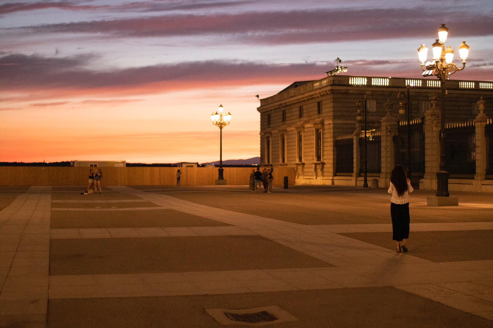
30
Un moment de respiro

26
Diplomele nu-s de ajuns
– Partea Întâi : Inteligența Emoțională -
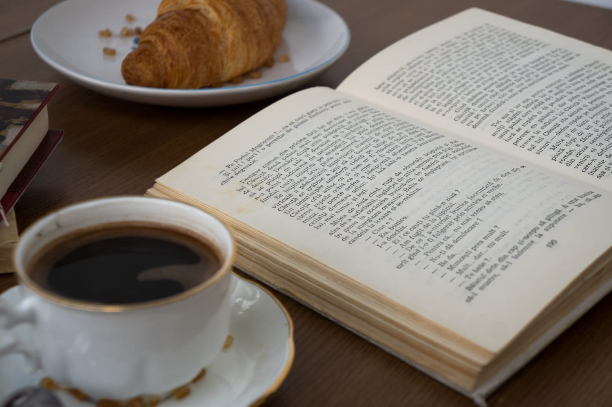
23
Book Club Sava

21
Mincinoșii

19
Interviu cu Elvira Deatcu
The hate you give - de Angie Thomas
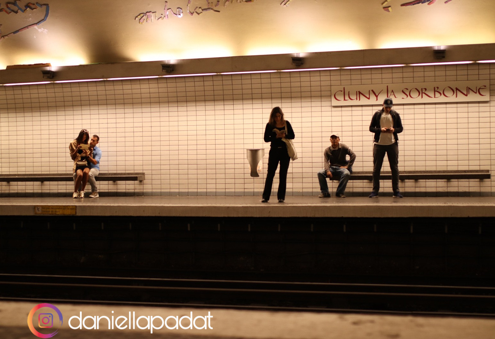
3
Șase tipuri de oameni pe care îi vei întâlni la metroul bucureștean
Interviu cu Luis Ovidiu Popa
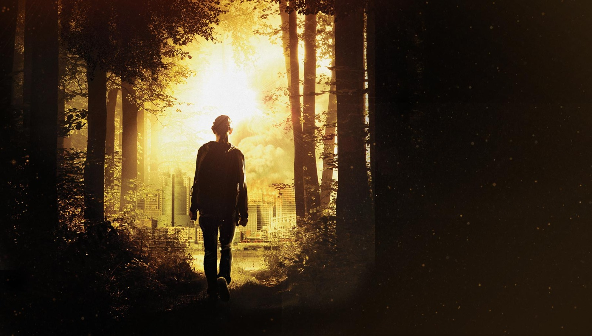
23
The 5th Wave
Târgul liceelor din București 2020 în mediul online
Interviu cu dr. Radu Zamfir
Ziua porților deschise
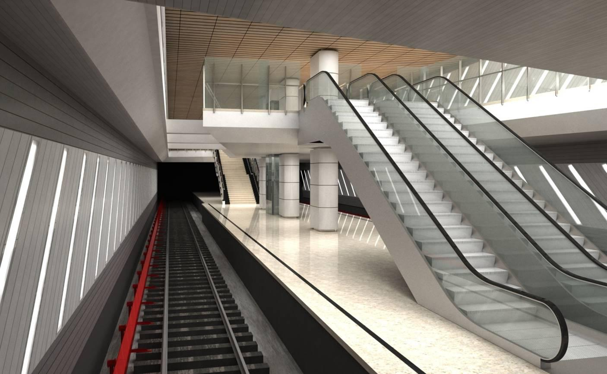
1
“Un deceniu de împliniri mărețe”

24
All the bright places
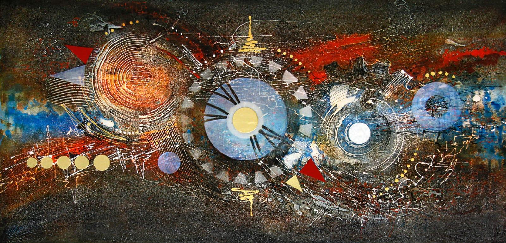
17
Timp: Tempo, Czas, Vremya
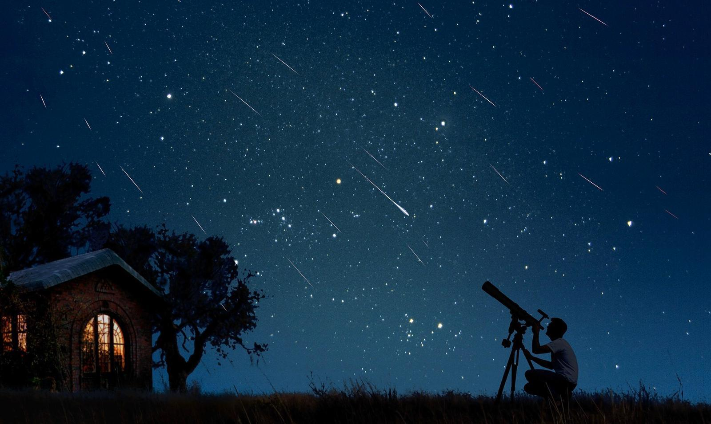
10
O stea sau un meteor
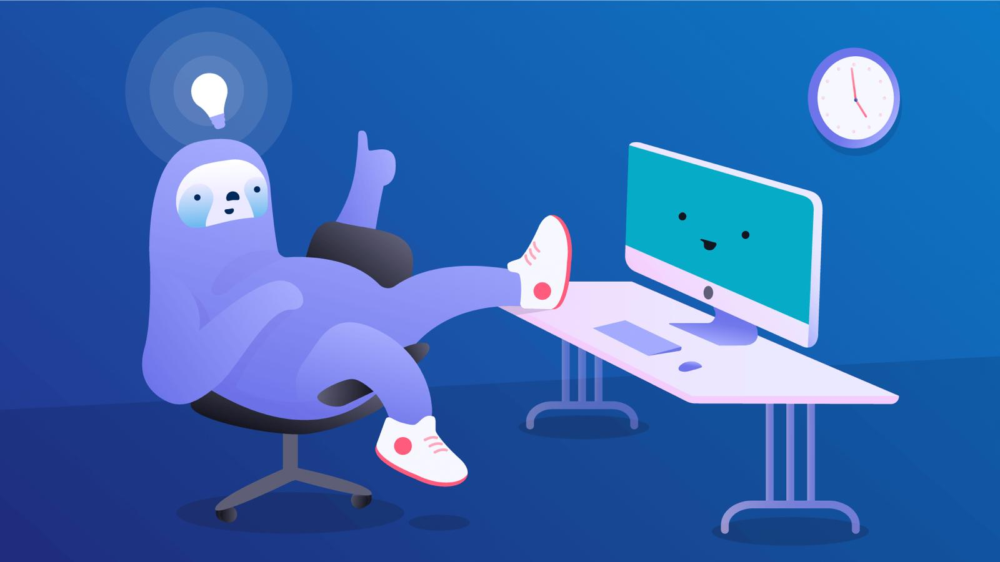
31
The originals
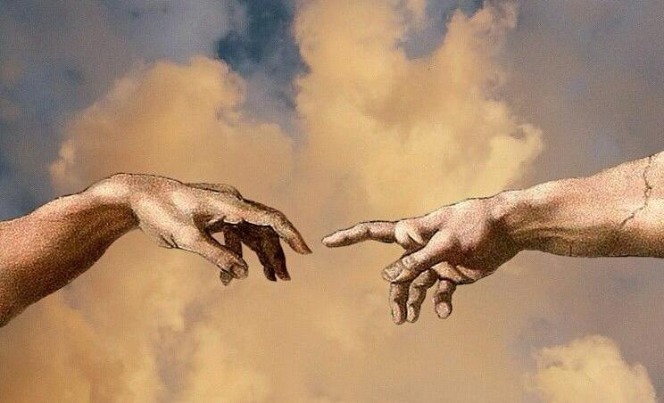
28
Îndemn
Probabil unul dintre primele lucruri pe care le am
învățat fiind elevă la „Sf. Sava”. Orice ai face, fă din suflet, fă din inimă și vei
vedea rezultatele .

23

19

10
A COTROCENI- (vb.) a căuta esența lucrurilor fine
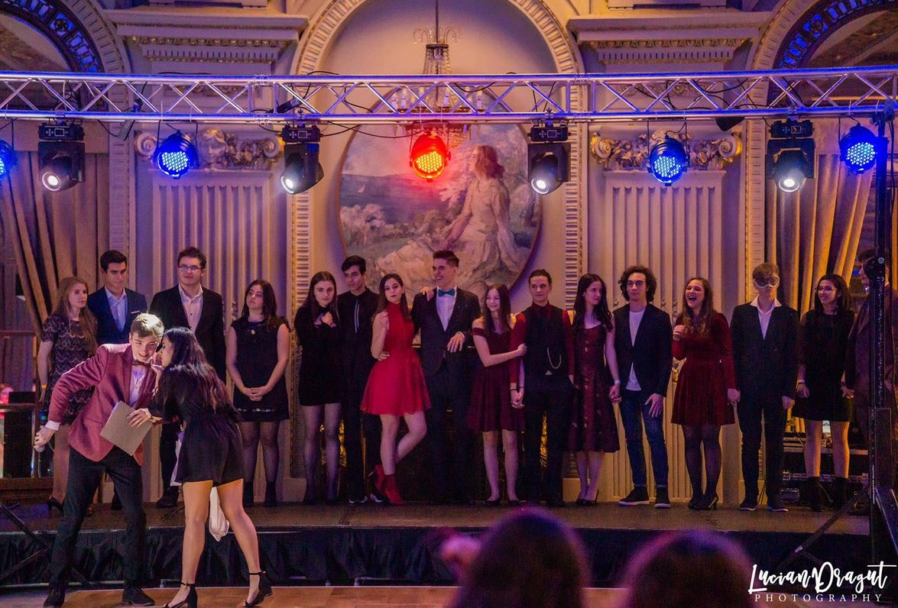
1
Bal mascat - Interact Sfântul Sava Curtea Veche

4
Lolita - Vladimir Nabokov

25
Meșterul Manole
Un păianjen s-a strecurat cu tupeu
La mine-n liceu ..."

3
Inspiraţia: Love-Hate